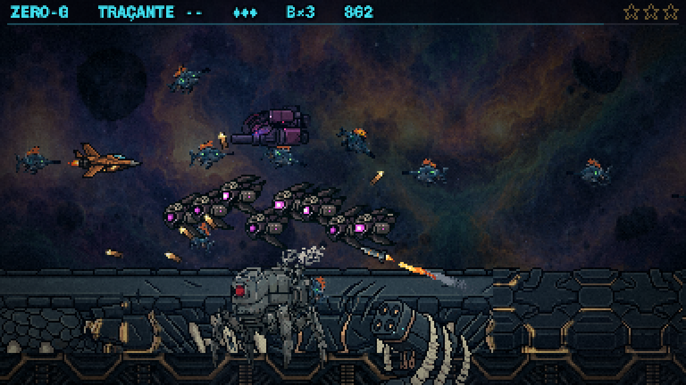
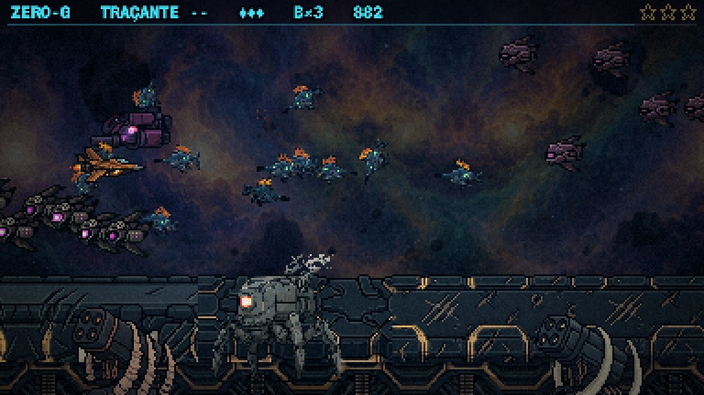
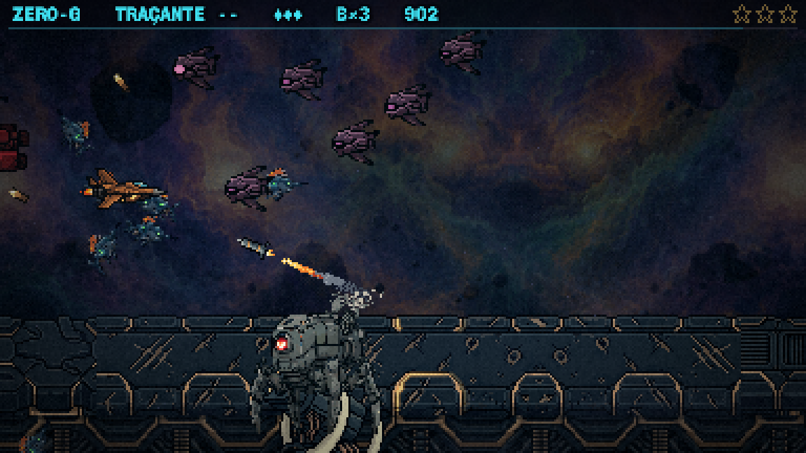

O seu retorno: a base não resolveu, ela destacou que a peça estava mal posicionada; o certo é ela ficar quase na borda de baixo da tela, como se estivesse presa abaixo da linha. Bronze e o tom do osso aprovados.
Feito: o pé da torre agora fica abaixo da borda da tela. A base some inteira; só as costelas e o casulo sobem do rodapé.
Já está no jogo (http://localhost:5173, F3, do casco em diante). Nada commitado.
O Ato 2 real, sem nada plantado à mão: as torres nascem onde o sorteio do jogo as põe, como antes. As três em fila da folha anterior eram só demonstração.
Nesta semente de teste nasceram 2 torres, perto do fim do Ato 2. Cada vaga é um sorteio de 50%; a média da fase segue em cerca de 4, igual a antes.


